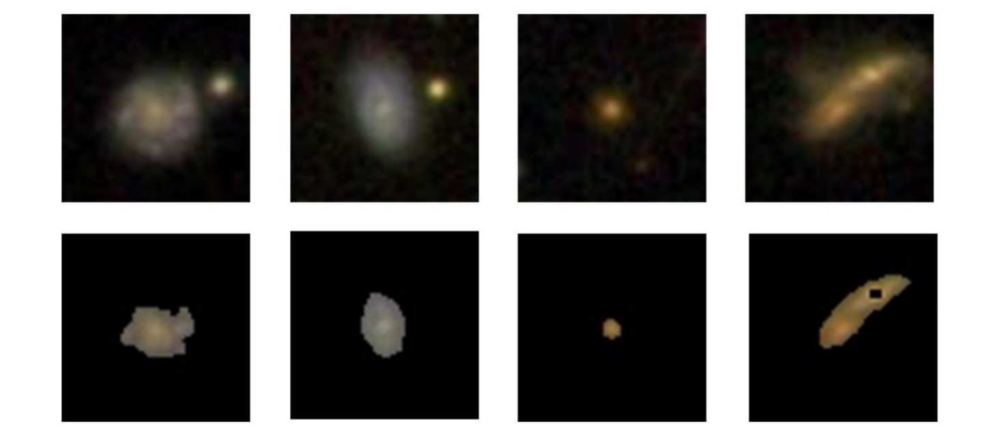
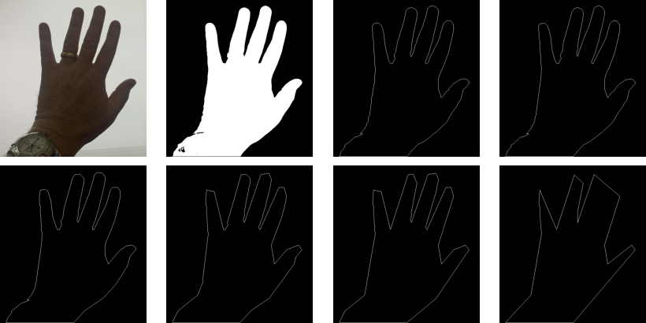
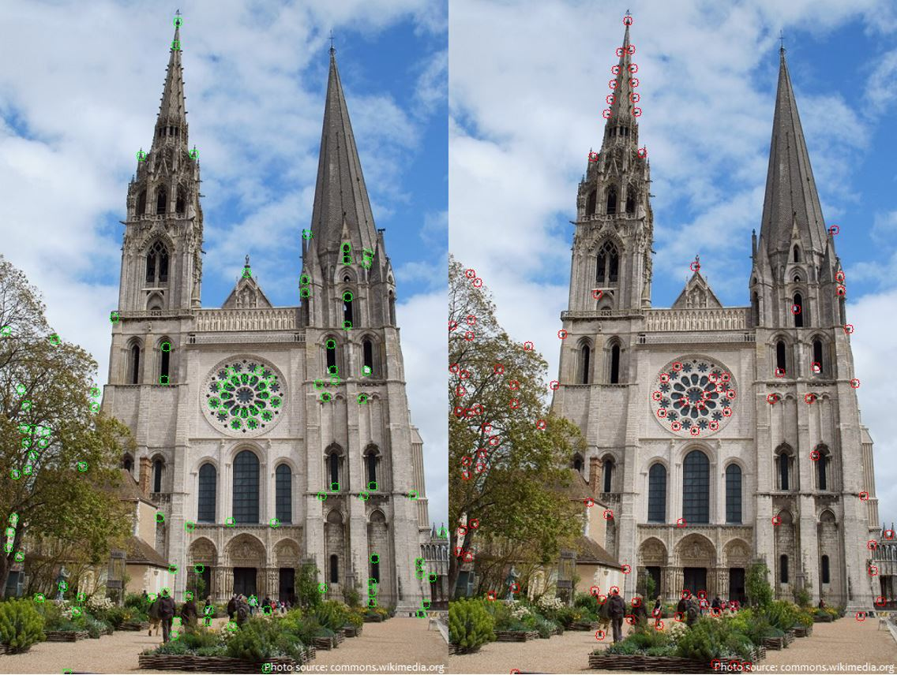
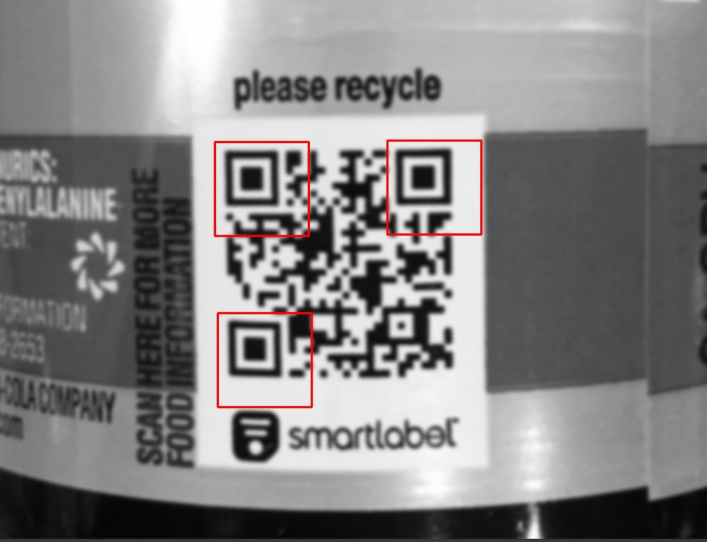

Novel deep-learning segmentation techniques that establish new benchmarks in photometric redshift estimation.

View thesis and research detailsMachine Learning Engineer Computational Astronomy Researcher
Novel deep-learning segmentation techniques that establish new benchmarks in photometric redshift estimation.

View thesis and research details
This project binarizes an image using Otsu's method and inverse thresholding, then implements Pavlidis contouring to extract the object contour. Discrete curve evolution removes the least relevant vertices.

This project compares Shi-Tomasi and Harris corner detection on individual images and contrasts the corners identified by each algorithm.

This project uses computer vision template matching to find key points in a variety of QR codes. Machine-learning clustering converts regions of template matches into centroid points.
Images of the same location are stitched together using keypoint detection, homographic transformations, and linear blending across increasingly challenging panoramas.